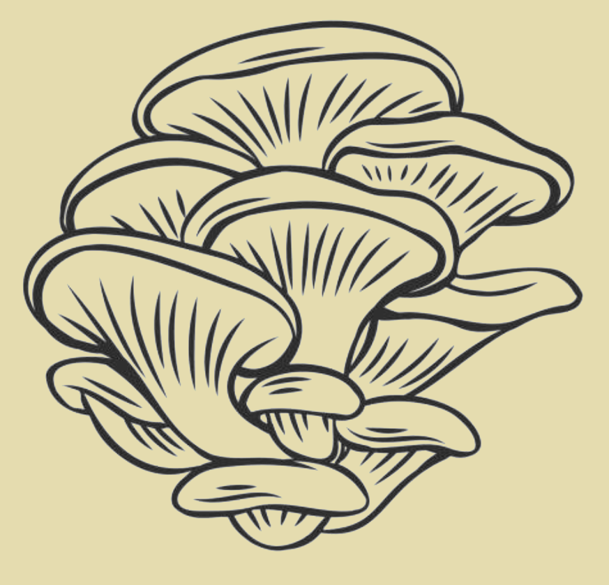
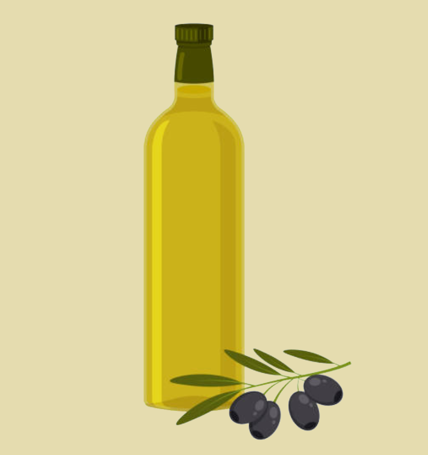
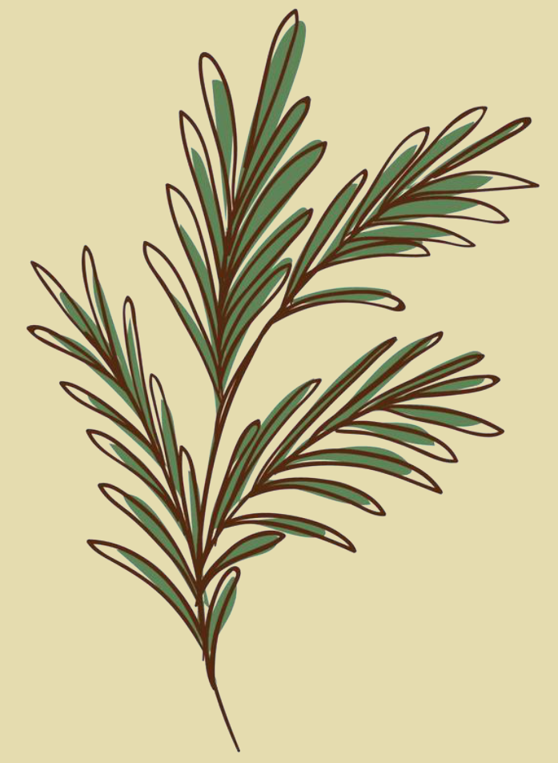
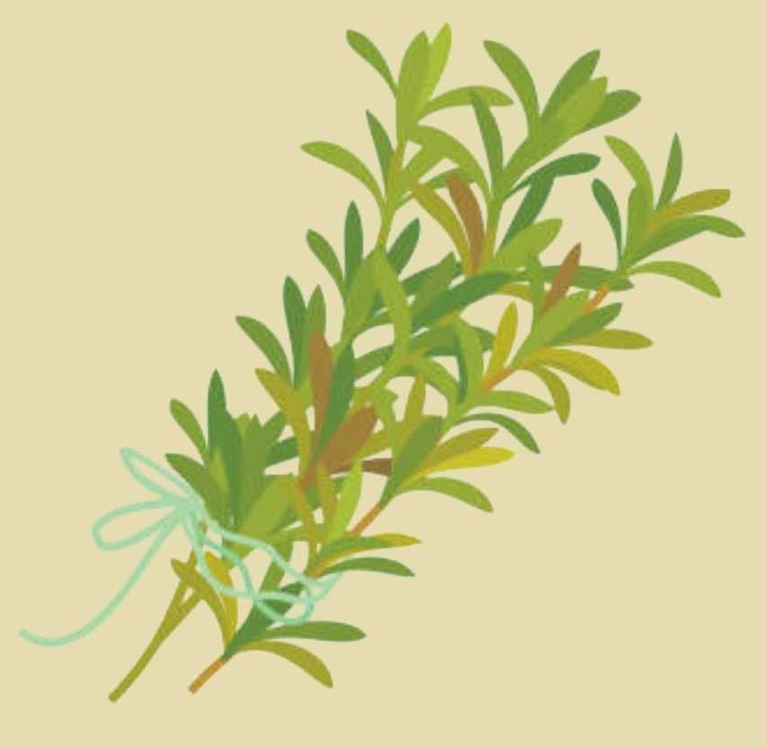

Knapperige Kabouterhapjes — Veilig
Knapperige Kabouterhapjes
Start

Oesterzwammen

Olijfolie

Rozemarijn

Tijm
Zoek dit ingrediënt:
Je browser ondersteunt dit videobestand niet.
Volgende
Recept
Ingrediënten:
250 g oesterzwammen
2 eetlepels olijfolie
1 takje rozemarijn
1 takje tijm
Bereidingswijze:
Maak de oesterzwammen schoon.
Laat je kind voorzichtig ruiken aan de oesterzwammen (optioneel).
Verhit de pan met olijfolie.
Voeg de oesterzwammen toe en bak ze goudbruin.
Voeg de kruiden toe en serveer.
Smakelijk!